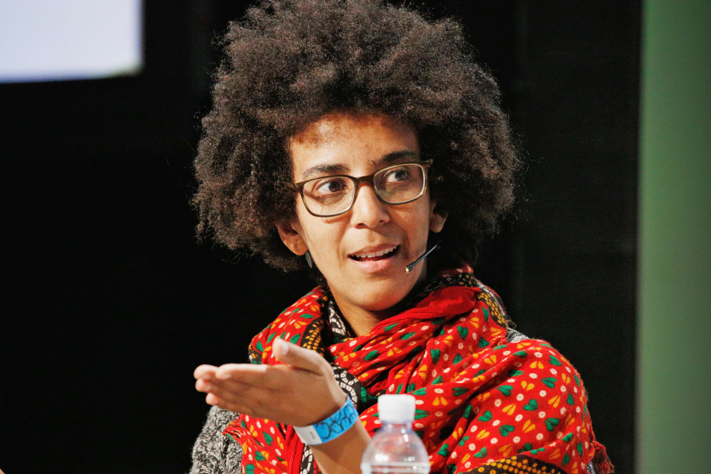

Tech Heroes in Equity & Artificial Intelligence
These leaders challenge dominant power structures in artificial intelligence and work to ensure technology advances equity across race, class, and gender in the United States.
Dr. Timnit Gebru
AI Researcher and Founder of the Distributed AI Research Institute (DAIR)

Dr. Timnit Gebru is an Ethiopian-American computer scientist whose work focuses on algorithmic bias and the structural harms of artificial intelligence systems. She previously co-led Google’s Ethical AI team before founding the Distributed AI Research Institute (DAIR), an independent research organization centered on community-rooted AI development.
One of her most influential research contributions, the Gender Shades study, demonstrated that commercial facial recognition systems produced significantly higher error rates for women and people with darker skin tones. This work provided measurable evidence that AI systems can reproduce racial and gender bias when trained on unrepresentative data.
Dr. Gebru’s departure from Google sparked national conversations about corporate control over AI research and the tension between ethical accountability and profit-driven technological development. Through DAIR, she continues to advocate for research independence, transparency, and community-centered AI.
Learn More
Dr. Rediet Abebe
Computer Scientist and Economist
Dr. Rediet Abebe is a computer scientist and mathematician with a vast academic background from Harvard, University of Cambridge and Cornell. She is currently a assistant Professor at UC Berkeley and a co-founder of Black in AI.
Upon completing a one-year mathematics program at the University of Cambridge, Dr. Abebe decided to switch her focus to Computer Sciences as she believed she could better solve real social problems. After receiving her Ph.D in CS from Cornell she now studies and uses her expertise to develop models to improve public resources such as financial aid. Similarly, she works with the Ethiopian government to improve their match system between high school students and colleges. It is with this research that she directly impacts and aids people's futures
Through Black in AI, Dr. Abebe has helped build mentorship networks and institutional support for Black researchers in artificial intelligence and computer science in general. Her leadership and role in advancing equity in AI research and development has been instrumental in creating more inclusive spaces in the tech industry. Her work has helped make AI spaces more inclusive, especially for researchers who might otherwise be overlooked.